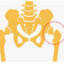

شکستگی گردن فمور
برای بررسی آسیب های این ناحیه ، گرافی Pelvic AP و Hip AP, lateral (Cross lateral) درخواست میکنیم.
1-برای تشخیص شکستگی های پروگزیمال فمور درکنار گرافی AP , lateral حتما Pelvic AP درخواست کنید وبا طرف مقابل مقایسه کنید. از خط شنتون استفاده کنید. که درصورت شکستگی این خط نشانه آسیب مفصل هیپ است.
2-تشخیص شکستگی گردن فمور خصوصا در مواردی که بدون جابجایی است ، خیلی اهمیت دارد چون در اثر جابجایی و عدم درمان مناسب سبب نکروز آوسکولار میشود. لذا اگر شک بالینی قوی داشتین (تندرنس یا درد یا محدودیت حرکت) در مفصل هیپ، و گرافی تشخیصی نبود، از MRI استفاده کنید.